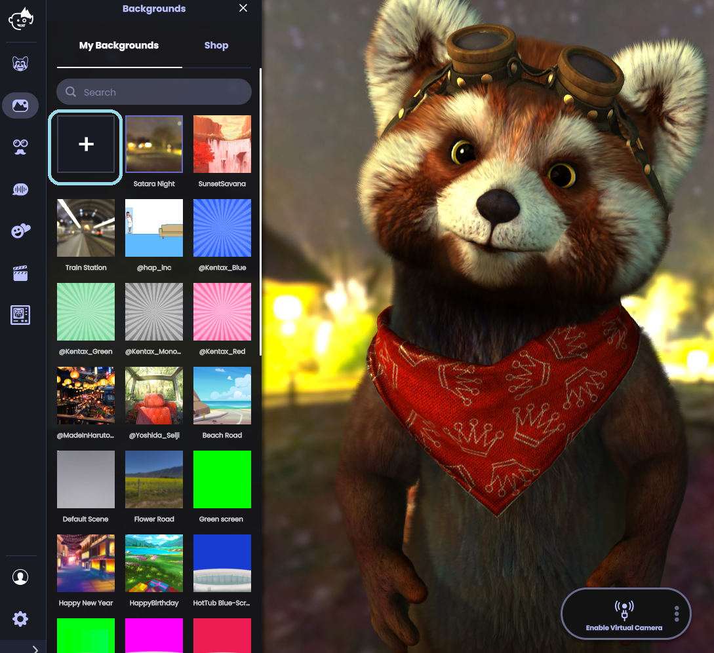
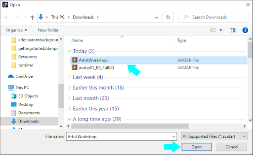
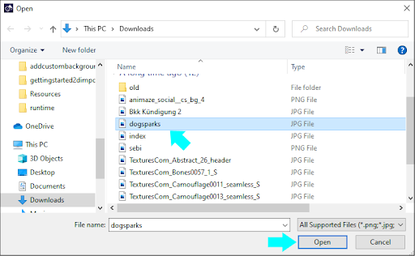
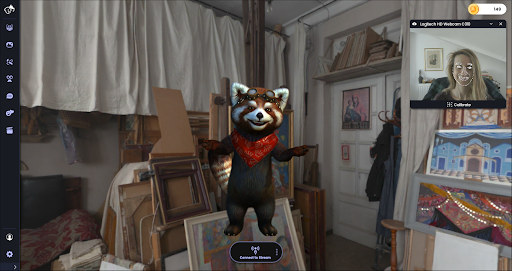
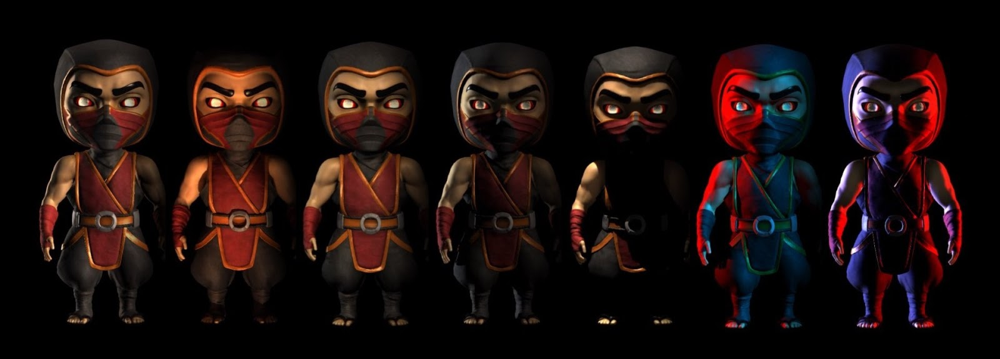
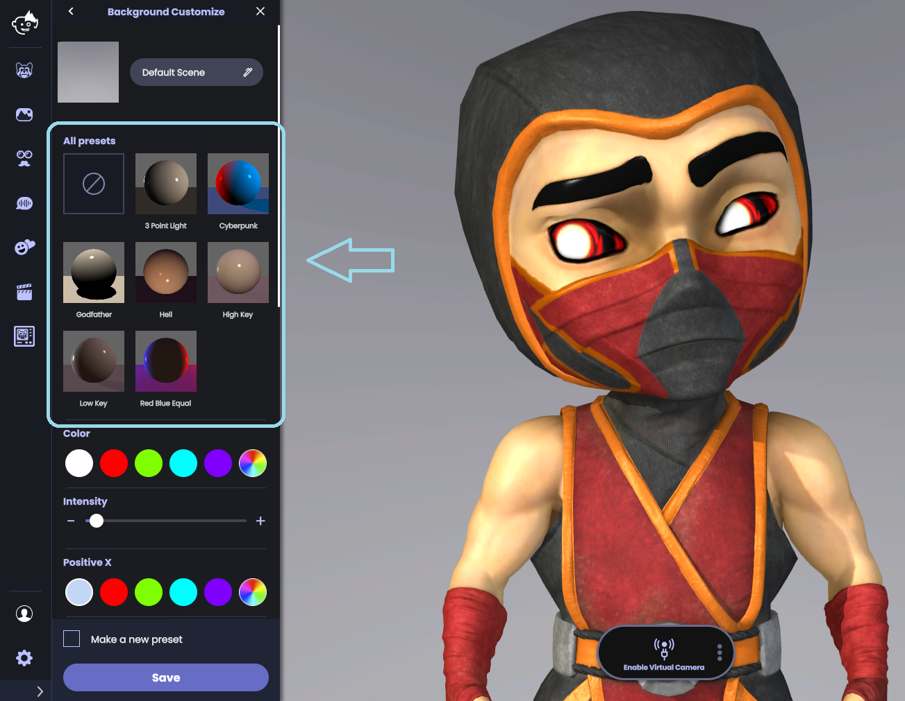
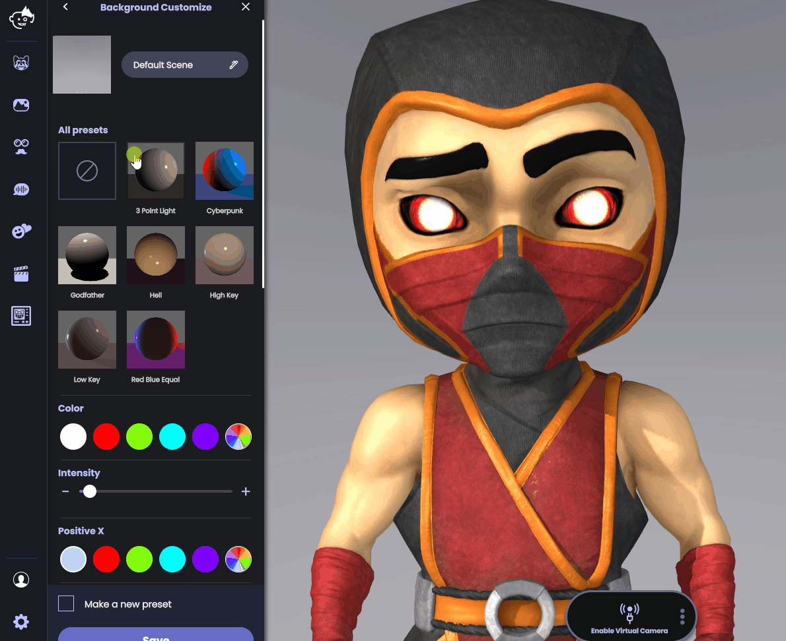
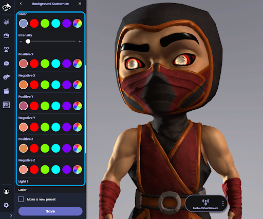

Background types, importing and customization
Animaze offers support for the following types of backgrounds:
-
360 backgrounds: 360 degree space, panorama background
-
Chroma backgrounds: Backgrounds with colour-separation overlay, known as green screen or blue screen
-
Background with overlays: Animated Backgrounds. Follow this Step-by-Step guide to make your own Overlay background.
-
Imported customized backgrounds: import your own creations/preferred jpgs
Backgrounds import
Animaze allows you to import Custom Backgrounds (.avatar file), or to Use a Photo as a Background (.jpg, .png, .bmp etc files).
To add a Custom Background in Animaze, follow these steps:
Click on the Backgrounds button in the left menu. Click the plus box in the My Backgrounds Tab.

From here, select a .avatar file or a photo to upload, and click Open.
 
Once opened, the imported background automatically displays.

Please note: For best results, for your custom photo backgrounds, we recommend images in 16:9 aspect ratio and with a minimum resolution of 1920x1080 pixels (1080p).
Backgrounds customization
The Animaze app includes the option to customize the lighting in every background. Lighting sets the mood and helps your avatar look cohesive with the background. Use one of seven presets (including Cyberpunk, Hell, or 3 point light) designed by our art team. Or, create your own custom lighting setup with up to four lights.

Lighting presets
To create your own custom lighting effect:
First, hit the Backgrounds button from the left menu. Select your background. Once the background loads, the lighting presets menu automatically opens.

Sample the presets to see which one best suits your avatar scene.

Once you select a preset, you can further customize to change the lights’ colors and intensities.

Finish the customization by hitting the save button.
When you find your perfect lighting customization, you can check the “Make a new preset” option in to have your Animaze app open to your preferred background lighting.